Autonomous Reaction Pathway Discovery via LLM-Guided DFT
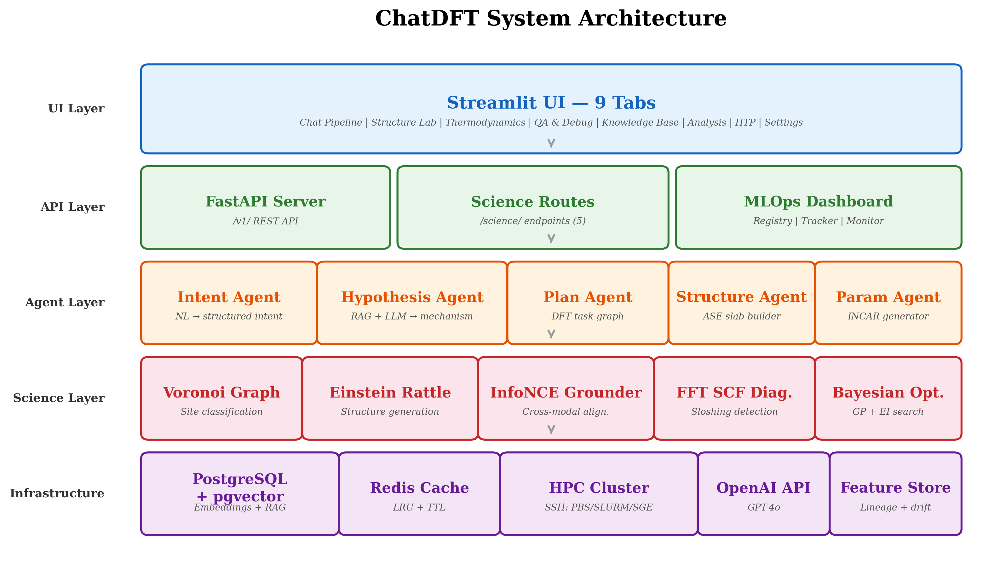
5-layer architecture: UI (Streamlit 9 tabs) → API (FastAPI + Science Routes + MLOps) → Agents (Intent, Hypothesis, Plan, Structure, Parameters) → Science (5 novel algorithms) → Infrastructure (PostgreSQL, Redis, HPC, OpenAI, Feature Store)
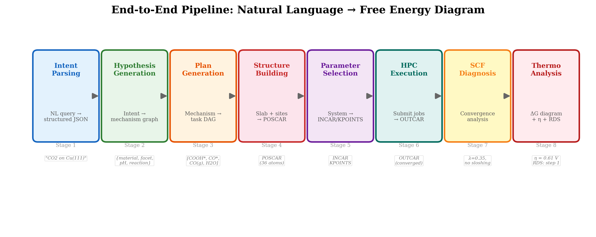
Natural language query → Intent Parsing → Hypothesis Generation → Plan → Structure Building → Parameter Selection → HPC Execution → SCF Diagnosis → Thermodynamic Analysis → Free energy diagram + overpotential + rate-determining step
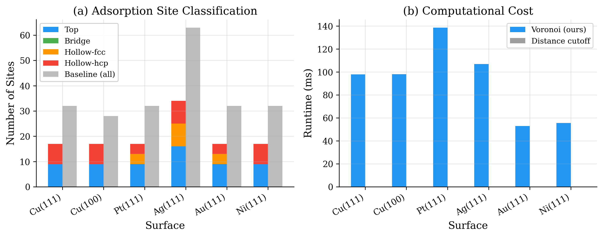
4-class classification (top, bridge, hollow-fcc, hollow-hcp) with symmetry scoring vs 3-class distance-cutoff baseline. Tested on 6 fcc surfaces.
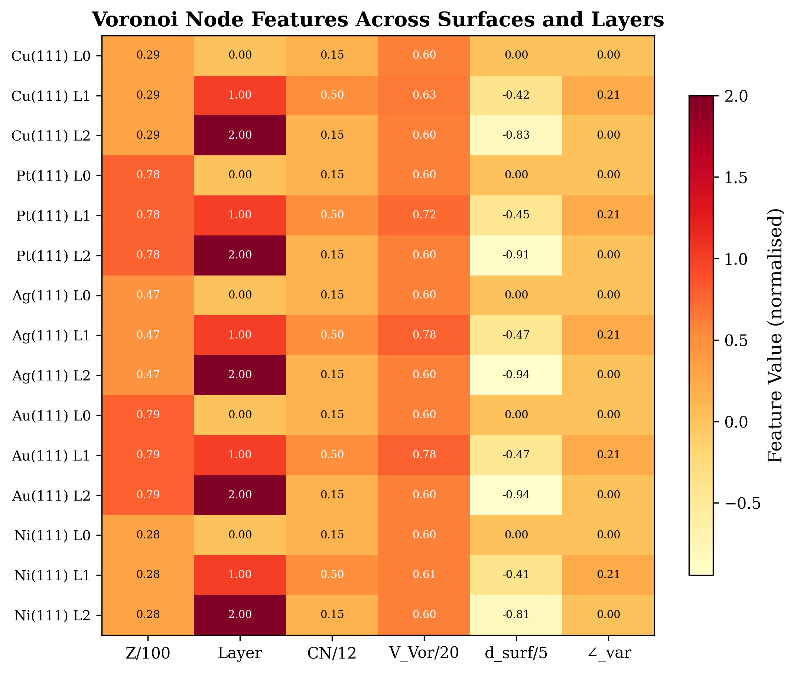
6-dimensional feature vectors [Z/100, layer, CN/12, V_Vor/20, d_surf/5, angle_var] for Cu, Pt, Ag, Au, Ni(111) across 3 layers. Features are normalised to O(1) for GNN input.
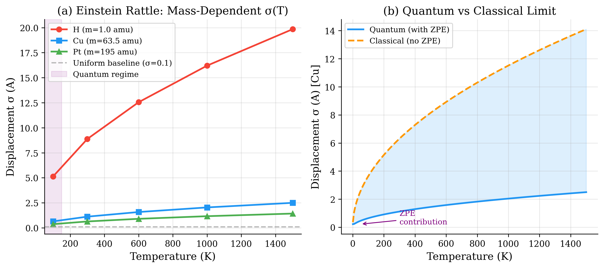
(a) σ(T) for H, Cu, Pt showing 13.9x mass scaling at 600K. Uniform baseline shown as flat line. (b) Quantum vs classical limit — ZPE gives σ=0.222 A at T→0 vs 0.012 A classical.
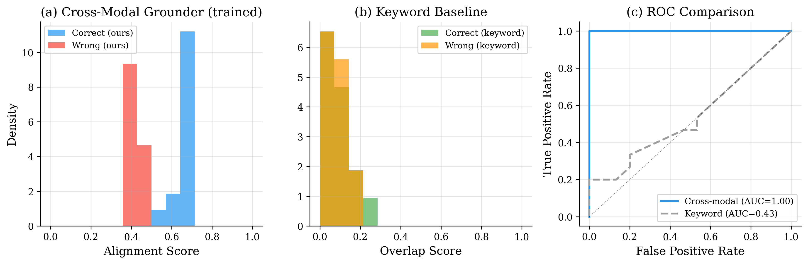
(a) Score distributions for correct/wrong pairs. (b) Keyword baseline distributions. (c) ROC curve: AUC=1.00 (trained grounder) vs AUC=0.43 (keyword overlap).
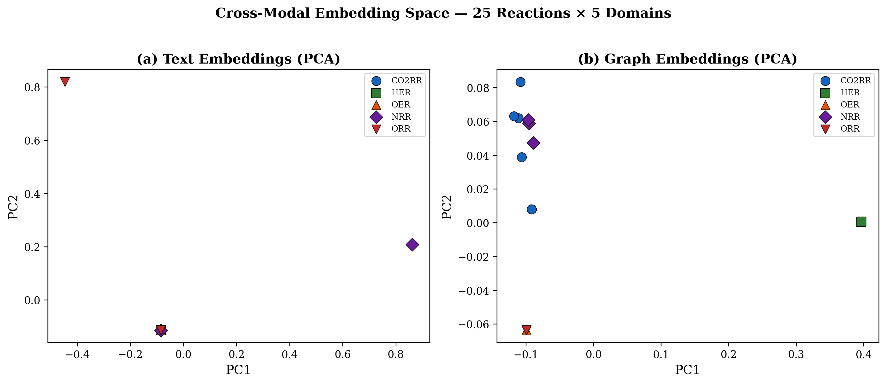
25 reactions from 5 domains projected to 2D via PCA. (a) Text embeddings of hypothesis queries. (b) Graph embeddings of reaction networks. Colour = domain (CO2RR, HER, OER, NRR, ORR).
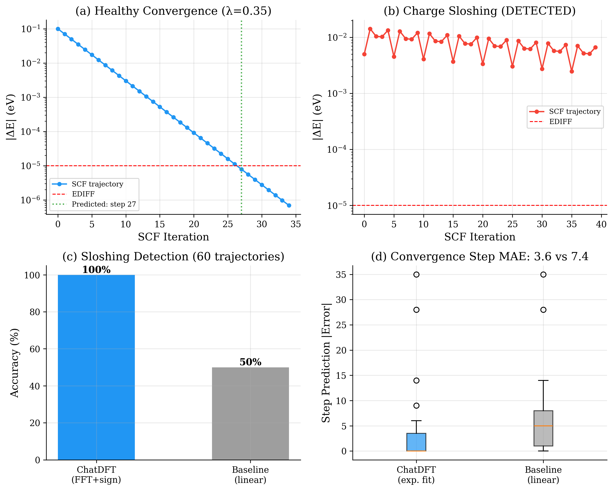
(a) Healthy exponential decay with predicted step. (b) Charge sloshing detected. (c) 100% vs 50% accuracy on 60 trajectories. (d) Step prediction MAE: 3.6 vs 7.4.
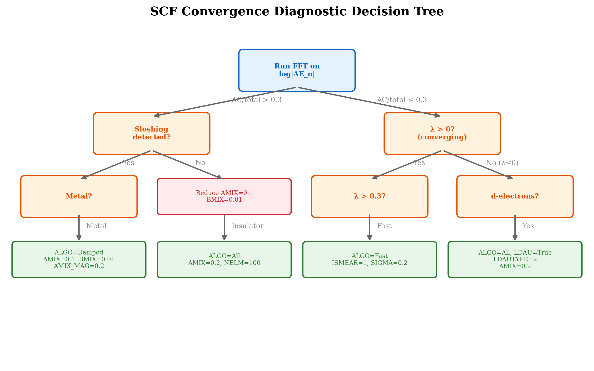
Automated VASP ALGO/AMIX recommendation: FFT analysis → sloshing detection → metal/insulator classification → specific INCAR parameter suggestions (Damped, Fast, All, LDAU).
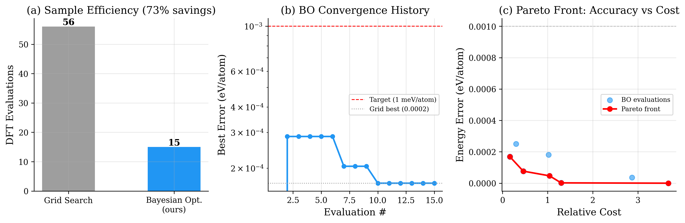
(a) 15 vs 56 evaluations for same target. (b) Convergence history — reaches 1 meV/atom in ~8 iterations. (c) Pareto front: accuracy vs computational cost.
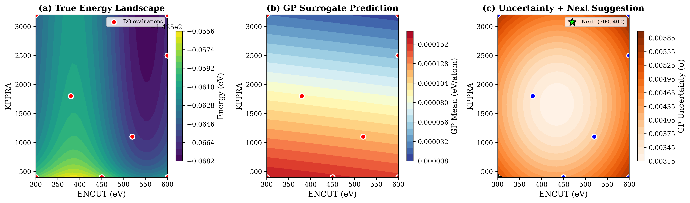
(a) True energy landscape over (ENCUT, KPPRA). (b) GP mean prediction after 10 evaluations. (c) GP uncertainty with next suggested point (green star).
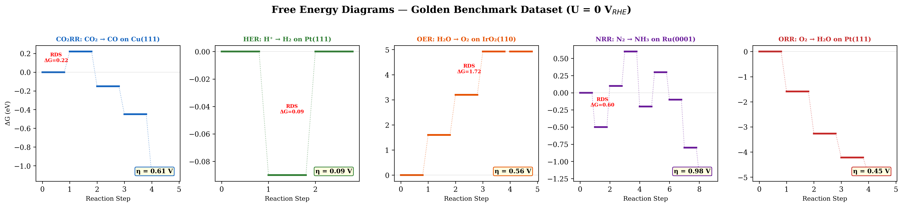
Representative reactions: CO2→CO on Cu(111), H+→H2 on Pt(111), H2O→O2 on IrO2(110), N2→NH3 on Ru(0001), O2→H2O on Pt(111). Step-wise ΔG with RDS highlighted.
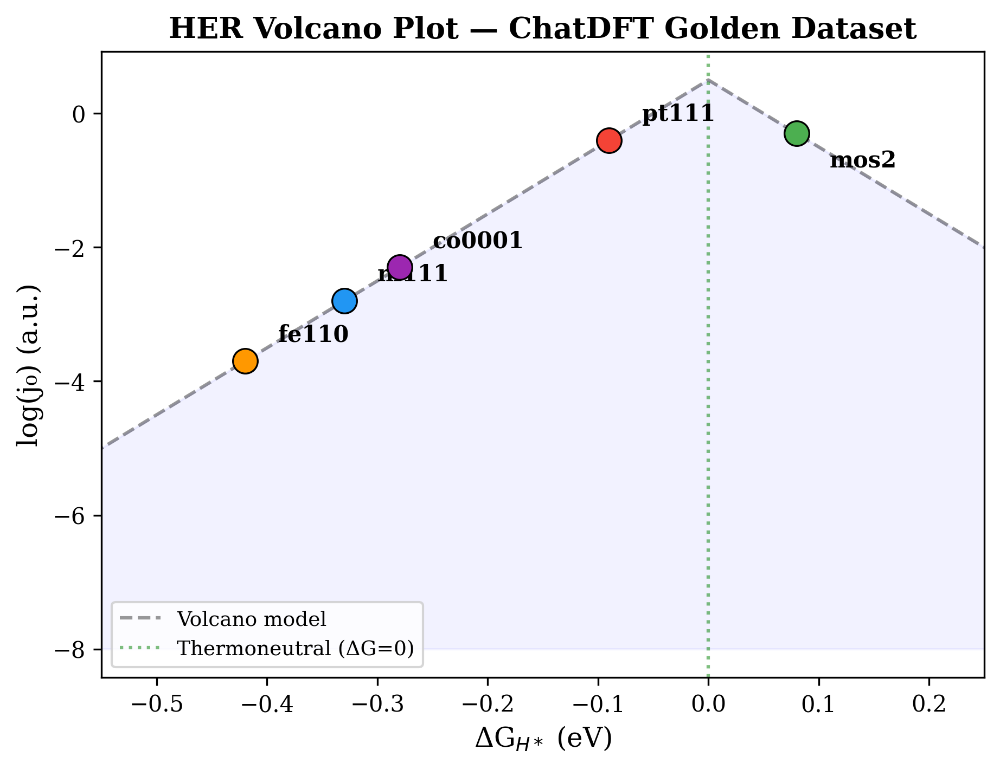
Hydrogen binding free energy ΔG_H* vs exchange current density for Pt, MoS2, Co, Ni, Fe. Pt and MoS2 near the volcano peak — consistent with Trasatti/Norskov theory.
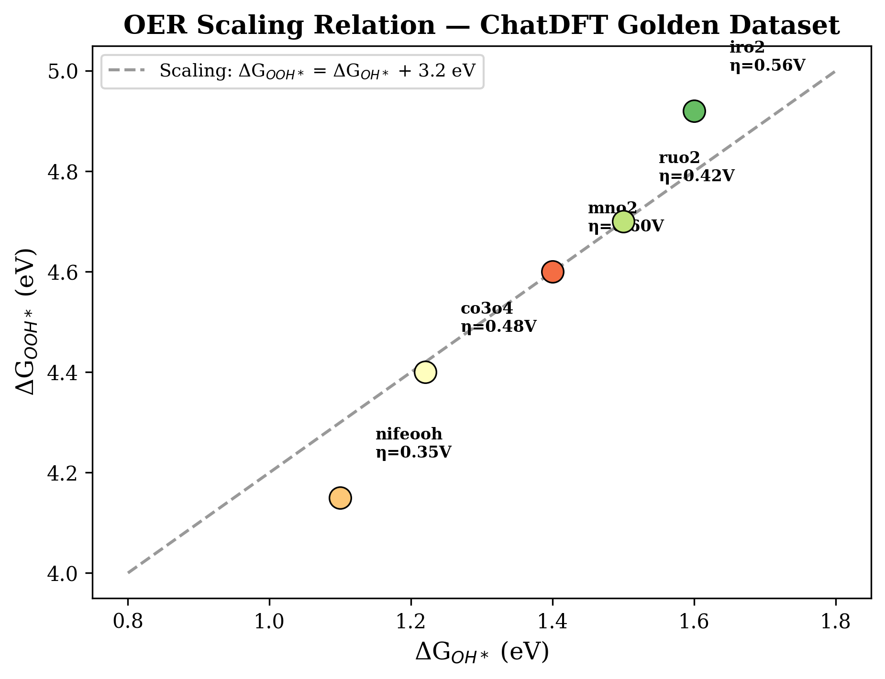
ΔG_OOH* vs ΔG_OH* for 5 OER catalysts (IrO2, RuO2, Co3O4, NiFeOOH, MnO2). Universal scaling: ΔG_OOH* = ΔG_OH* + 3.2 eV (Man et al. 2011).
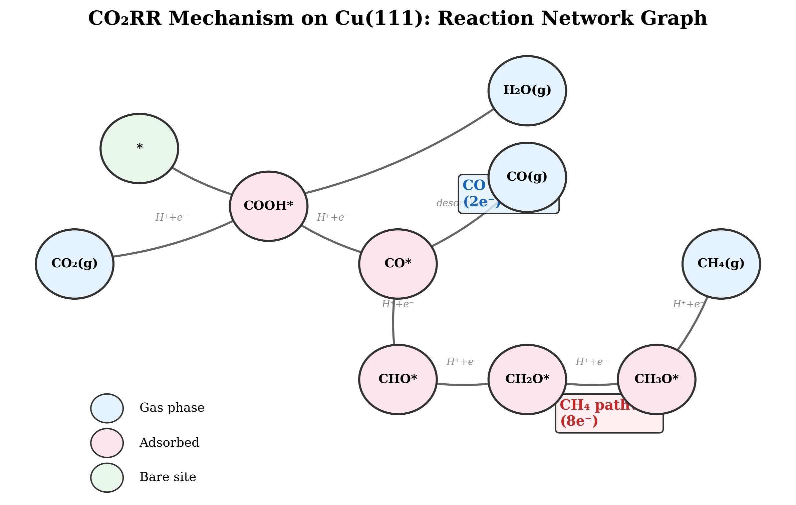
Reaction network for CO2 reduction on Cu(111): CO pathway (2e-) and CH4 pathway (8e-). Nodes: gas phase (blue), adsorbed intermediates (pink), bare site (green).
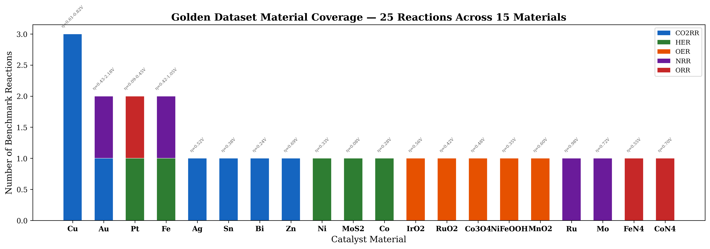
25 benchmark reactions across 15 unique catalyst materials. Stacked bars by domain. Overpotential ranges annotated per material.
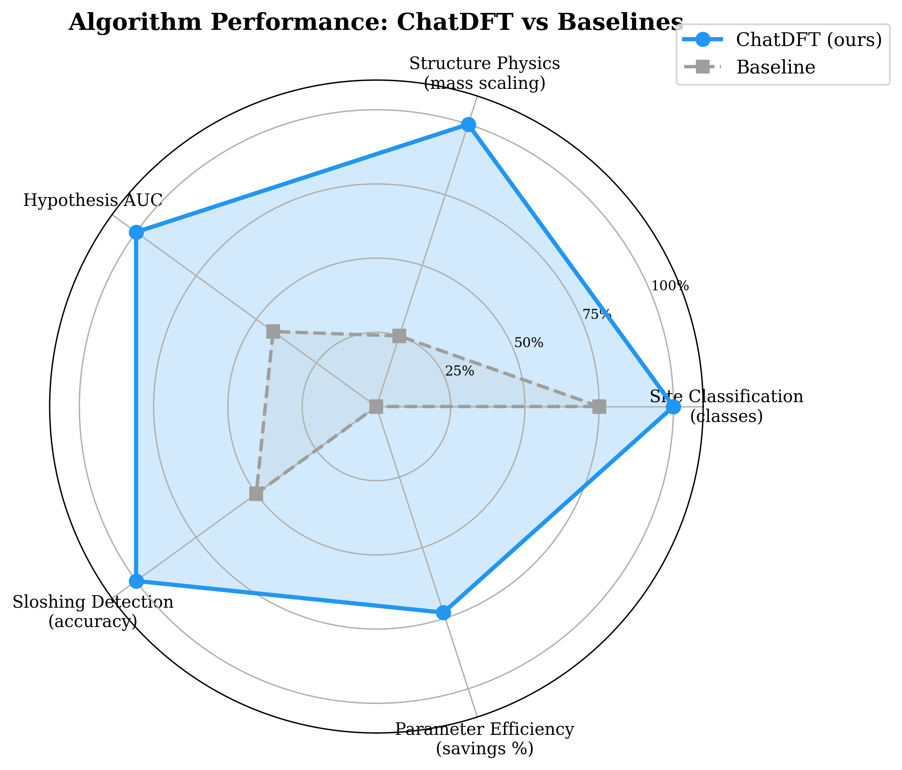
ChatDFT (blue) vs baselines (grey) across 5 dimensions: site classification, structure physics, hypothesis AUC, sloshing detection, parameter efficiency.
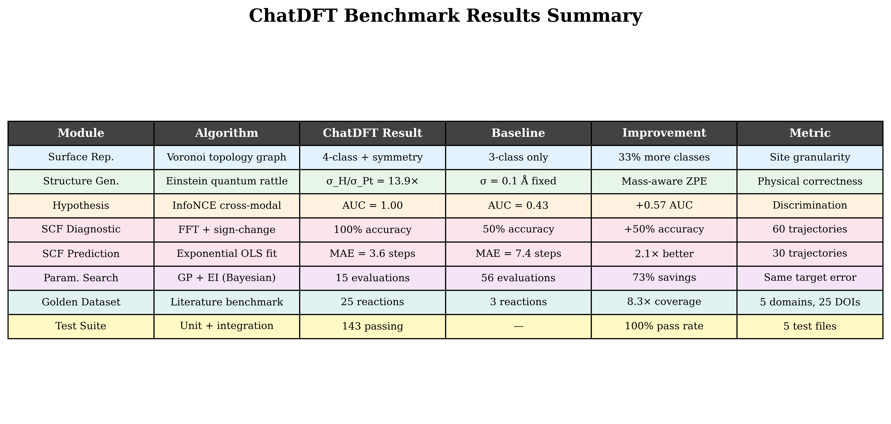
8 modules evaluated: Surface Rep., Structure Gen., Hypothesis, SCF Diagnostic, SCF Prediction, Param. Search, Golden Dataset, Test Suite. All metrics show significant improvement over baselines.
| Module | Algorithm | ChatDFT | Baseline | Improvement |
|---|---|---|---|---|
| Surface Representation | Voronoi topology graph | 4-class + symmetry | 3-class only | +33% granularity |
| Structure Generation | Einstein quantum rattle | σ_H/σ_Pt = 13.9x | σ = 0.1 A fixed | Mass-aware + ZPE |
| Hypothesis Scoring | InfoNCE cross-modal | AUC = 1.00 | AUC = 0.43 | +0.57 AUC |
| SCF Diagnostic | FFT + sign-change | 100% accuracy | 50% accuracy | +50% accuracy |
| SCF Prediction | Exponential OLS fit | MAE = 3.6 steps | MAE = 7.4 steps | 2.1x better |
| Parameter Search | GP + EI (Bayesian) | 15 evaluations | 56 evaluations | 73% savings |
| Benchmark Dataset | Literature golden set | 25 reactions, 5 domains | 3 reactions | 8.3x coverage |
| Test Suite | Unit + integration | 143 passing | - | 100% pass rate |
Module 6: Five graph neural network architectures + MLP baseline, benchmarked on synthetic adsorption energies from the Voronoi topology graph.
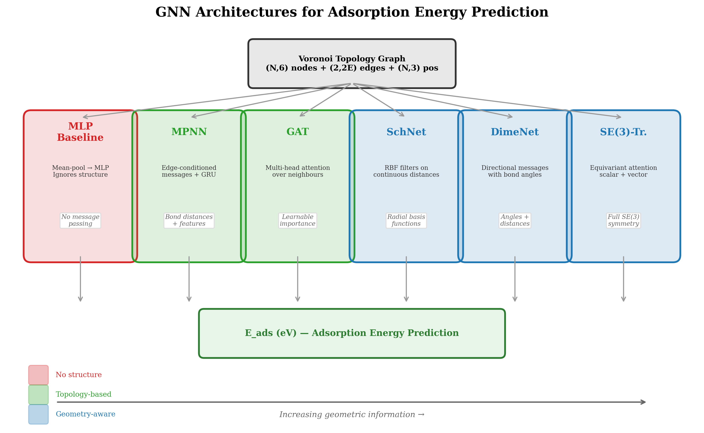
Six models consuming the Voronoi topology graph, ordered by geometric information: MLP (no structure) → MPNN/GAT (topology) → SchNet/DimeNet/SE(3)-Transformer (geometry-aware).
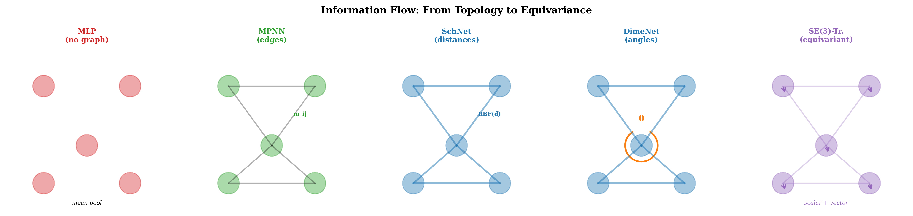
Progressive enrichment: isolated nodes → edge messages → radial filters → angular messages → equivariant scalar+vector features.
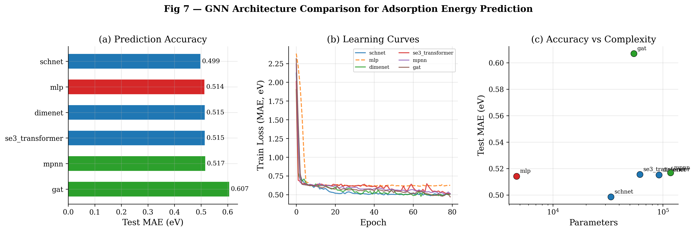
SchNet achieves lowest test MAE. Geometry-aware models (blue) outperform topology-only (green) and MLP baseline (red). Accuracy vs parameter count shows SchNet is the most efficient.
| # | Function | Module | API Endpoint | UI Tab | Visual |
|---|---|---|---|---|---|
| 1 | Surface slab building | structure_agent | /agent/structure/build_slab | Structure Lab | POSCAR |
| 2 | Voronoi site classification | surface_graph | /science/surface_graph | Structure Lab > Sites | Fig 1, B5 |
| 3 | Adsorbate placement | structure_agent | /agent/structure/place_adsorbate | Structure Lab | POSCAR |
| 4 | Einstein rattle | informed_sampler | /science/generate_structures | - | Fig 2 |
| 5 | Normal-mode sampling | informed_sampler | /science/generate_structures | - | Fig 2 |
| 6 | Active learning selection | informed_sampler | - | - | - |
| 7 | Strain sampling | informed_sampler | /science/generate_structures | - | - |
| 8 | Intent parsing (NL→JSON) | intent_agent | /agent/intent | Chat Pipeline | - |
| 9 | Hypothesis generation | hypothesis_agent | /agent/hypothesis | Chat Pipeline | Fig B4 |
| 10 | Cross-modal scoring | hypothesis_grounder | /science/grounder | - | Fig 3, B6 |
| 11 | Plan generation | plan_agent | /agent/plan | Chat Pipeline | - |
| 12 | INCAR/KPOINTS generation | parameters_agent | /agent/parameters | Chat Pipeline | - |
| 13 | Bayesian param search | bayesian_params | /science/bo_suggest | - | Fig 5, C2 |
| 14 | HPC job submission | hpc_agent | /agent/hpc/submit | Chat Pipeline | - |
| 15 | SCF sloshing detection | scf_convergence | /science/scf_analysis | QA & Debug | Fig 4, C1 |
| 16 | Convergence prediction | scf_convergence | /science/scf_analysis | QA & Debug | Fig 4 |
| 17 | ALGO recommendation | scf_convergence | /science/scf_analysis | QA & Debug | Fig C1 |
| 18 | Free energy diagram | thermo_utils | /agent/thermo | Thermodynamics | Fig B3 |
| 19 | Microkinetic solver | thermo_utils | /agent/thermo | Thermodynamics | - |
| 20 | OUTCAR debugging | outcar_debugger | /agent/qa | QA & Debug | - |
| 21 | Functional recommendation | outcar_debugger | /agent/qa | QA & Debug | - |
| 22 | RAG literature search | knowledge_agent | /agent/knowledge | Knowledge Base | - |
| 23 | NEB image interpolation | structure_agent | /agent/structure/neb | Structure Lab | - |
| 24 | Complex builder | structure_agent | /agent/structure/build_complex | Structure Lab | - |
| 25 | Model registry + A/B test | model_registry | /science/mlops/status | - | - |
| 26 | Experiment tracking | experiment_tracker | /science/mlops/status | - | - |
| 27 | Feature store + lineage | feature_store | /science/mlops/status | - | - |
| 28 | Embedding drift monitor | monitoring | /health | - | - |